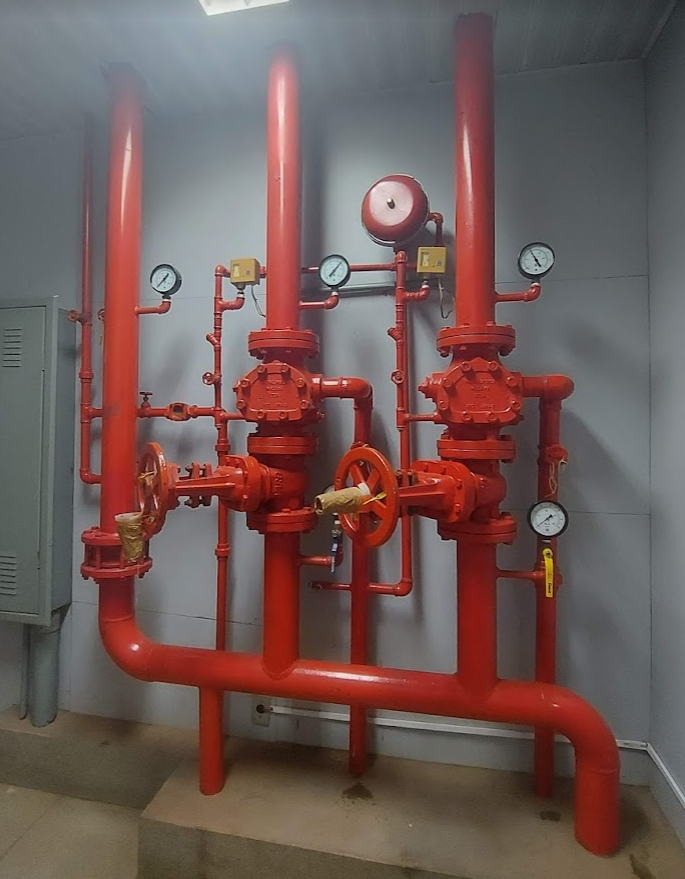

Abordagem do sistema de chuveiros automáticos e seu dimensionamento
Conceitos gerais
Sistema de combate a incêndio - sprinklers (SPK)
Chuveiros automáticos são dispositivo para supressão ou controle de incêndios que funciona
automaticamente quando seu
elemento termossensível é aquecido à sua temperatura de operação ou acima dela, permitindo que
a água seja descarregada sobre uma área específica
Ou seja, o sistema de proteção contra incêndio por chuveiros automáticos são estruturas fixas de combate
ao fogo, com
operação automática. Ou seja, os chuveiros, conhecidos como sprinklers, são ativados na presença de
chamas, liberando
água em uma densidade adequada, de uma maneira rápida e prática. A grande vantagem do sistema de
proteção contra
incêndio por chuveiros automáticos é o acionamento de alarme simultâneo com o início da operação do
sprinkler, o
que auxilia na fuga rápida e segura dos usuários, propiciando menos perdas humanas e materiais.
Tipos de chuveiros automáticos
Válvula de Governo e Alarme (VGA)
Trata-se de um conjunto composto por válvula seccionadora, válvula de retenção e sistema de alarme de fluxo,
manômetros, drenos e acessórios, instalado em cada coluna de alimentação (riser) de um sistema
de chuveiros automáticos

A Válvula de Governo e Alarme (VGA), como indica o nome, possui duas características: funciona como uma válvula
de
retenção e possui uma saída para o circuito de alarme (apenas com a VGA na posição aberta). Em caso de ativação
de
algum dos sprinklers do sistema, a pressão diminuirá no trecho posterior à válvula (jusante), provocando a
abertura
parcial da portinhola da VGA e gerando a queda de pressão também no trecho de tubulação anterior à válvula
(montante).
Tipos de sistemas
Sistema de tubo molhado
Rede de dutos preenchidos com água pressurizada durante todo o tempo.
O combate ao incêndio é feito apenas pelos chuveiros ativados pelo calor do
incêndio Nenhum trecho da tubulação pode estar sujeito a congelamentos.
É o mais comum em salas comerciais, shoppings, condomínios residenciais, etc.
Sistema de tubo Seco
Tubos preenchidos com ar comprimido Quando o chuveiro se abre o ar é liberado,
a queda de pressão na linha abre a válvula de entrada de água. Ótimo para locais
onde a tubulação pode sofrer congelamento Limitação: elevado tempo para a água atingir
o chuveiro aberto, especialmente para redes de grande porte.
Sistema de dilúvio
Tubulação seca e despressurizada Chuveiros abertos de modo permanente Dispõe de sistema
de detecção na área a ser protegida.